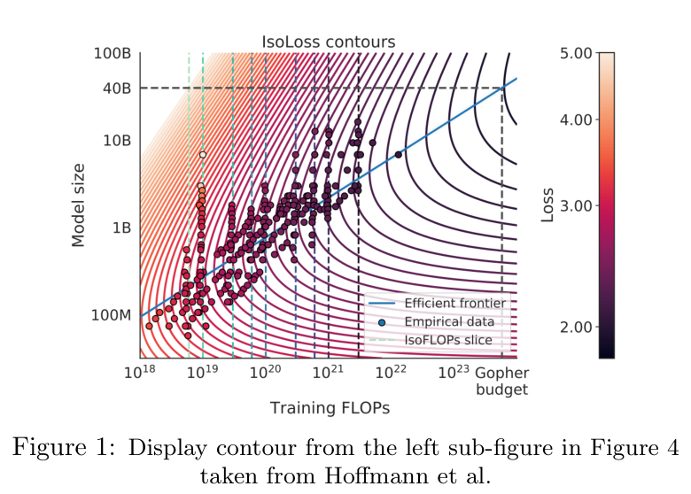
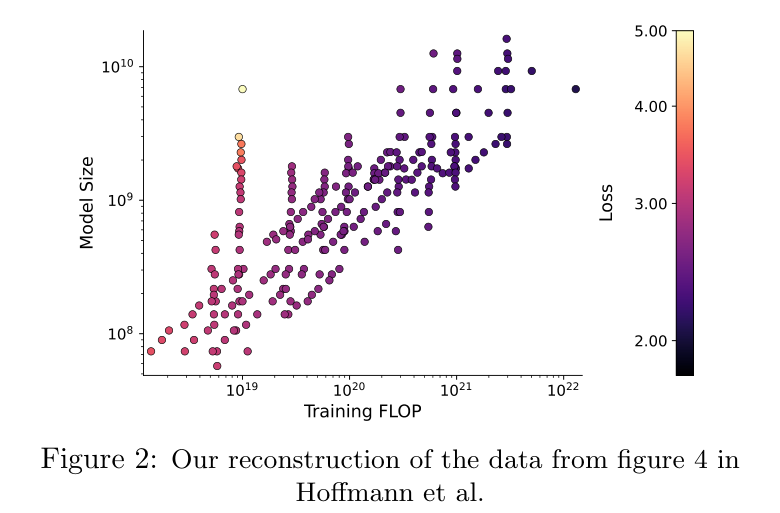
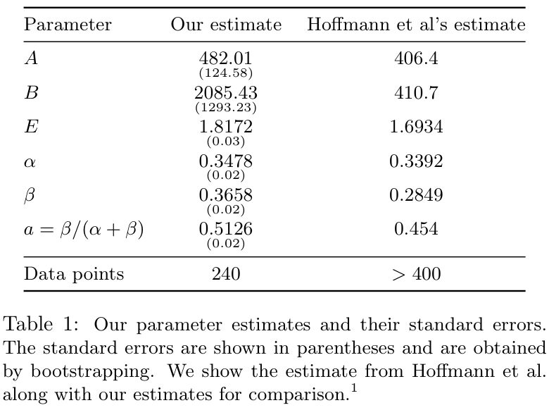
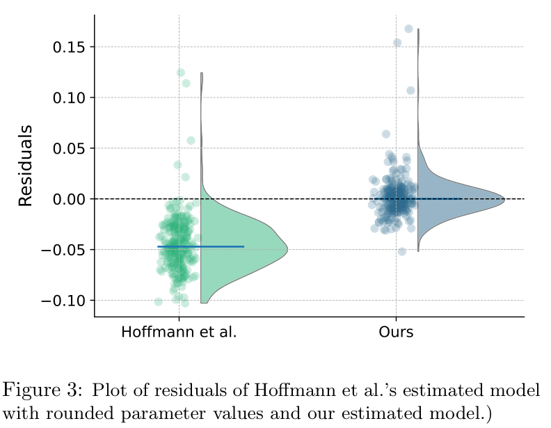
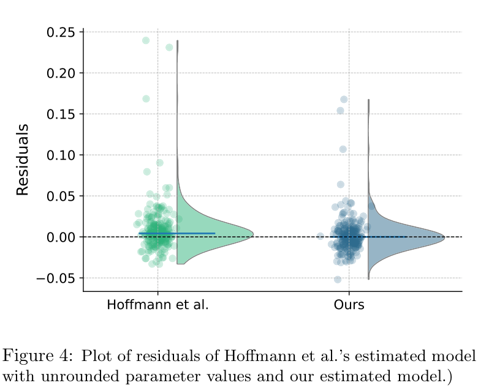
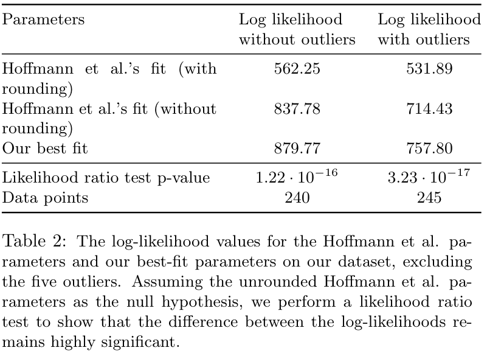
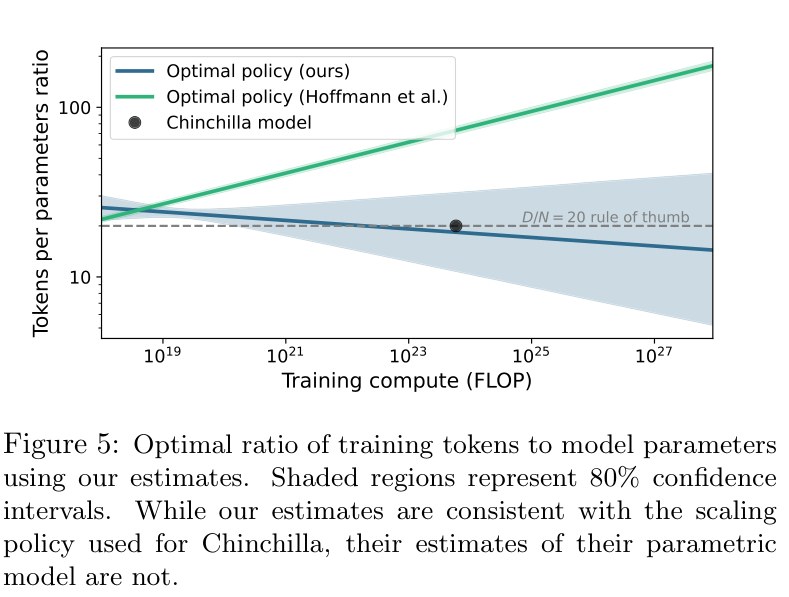
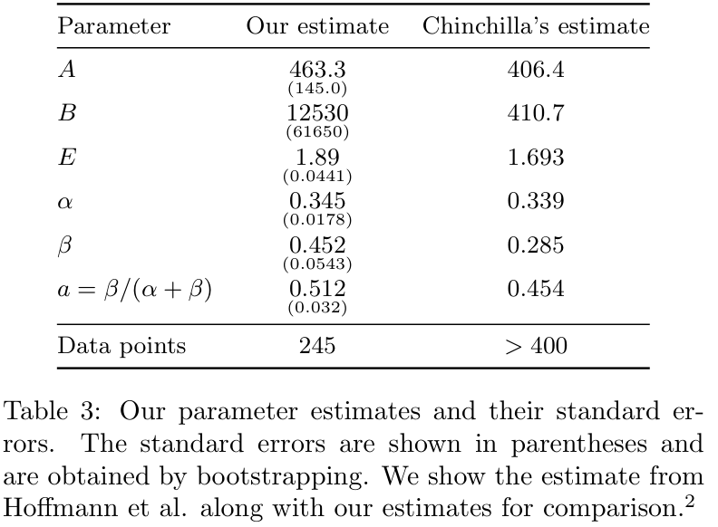

Chinchilla Scaling：一次复现尝试
Tamay Besiroglu Ege Erdil Matthew Barnett Josh You
Epoch AI
2024 年 5 月 16 日
摘要
Hoffmann 等（2022）提出了三种估计计算最优 scaling law 的方法。我们尝试复现其第三种估计过程，该过程对从其图中重建的数据拟合一个参数化 loss 函数。然而，我们发现，他们报告的估计结果与前两种估计方法不一致，无法拟合提取出的数据，而且报告的置信区间窄得令人难以置信：如此窄的区间需要超过 600,000 次实验，而他们很可能只进行了不到 500 次实验。两个因素解释了这些发现：首先，Hoffmann 等使用的优化器由于 loss 尺度选择不当而在收敛前就停止了；其次，论文正文中报告的参数估计值（相对于 TeX 源文件中的值）经过取整，导致 scaling law 的预测产生显著偏差。相比之下，我们使用第三种方法重新推导出的 scaling law，与 Hoffmann 等描述的前两种估计过程的结果相容。
1 引言
Hoffmann 等（2022）研究了在给定计算预算下训练 transformer 语言模型时，最优的模型大小和训练 token 数。他们在 5B 至 500B token 上训练了 400 多个模型，参数量从 70M 到超过 16B，发现对于计算最优训练，模型大小与训练 token 数应以相同速率增长：模型大小每翻一倍，训练 token 数也应翻一倍。随后，他们训练了一个按照其结果达到计算最优的模型，称为 Chinchilla。因此，他们提出的 scaling laws 通常被称为“Chinchilla scaling laws”。
作者使用三种不同方法估计计算最优前沿（A1–A3）：
- A1 在不同数量的 token 上训练大小固定的模型。
- A2 针对固定计算预算，训练大小不同的模型（IsoFLOP 曲线）。
- A3 拟合一个将 loss 表示为模型大小和训练 token 数的函数的参数化模型。
关键结果是，对于计算最优训练，模型大小和训练 token 数应同步增长：模型大小每翻一倍，训练 token 数也应翻一倍。
训练 token 数应与模型参数量以大致相同的速率增长这一结果，已由其他研究复现，例如 Anil 等（2023）。类似地，Bi 等（2024）发现，训练 token 数与模型参数量应近似成比例增长，但这对数据质量敏感，而且在质量更高的数据上训练时，较低的 token／参数比才是最优的。
除了告诉我们如何最优地扩展之外，方法 3 还特别值得关注，因为它揭示了稠密 transformer 的 scaling laws 的参数形式。Hoffmann 等给出的具体参数估计具有独立的科学研究价值，例如对神经 scaling laws 的理论解释（如 Michaud 等，2024；Bordelon 等，2024），以及如何同时优化训练与推理的计算开销等问题（如 Sardana 和 Frankle，2023）。
我们部分重建了 Hoffmann 等的数据集，并尝试复现方法 3。这涉及拟合一个参数函数，将最终预训练 loss 建模为 \(L(N,D)=E+A/N^\alpha+B/D^\beta\)，其中 \(N\) 表示模型参数量，\(D\) 表示训练 token 数。分析表明，我们估计的模型与 Hoffmann 等报告的拟合结果有显著差异，他们的拟合无法充分描述重建的数据。我们证明，Hoffmann 等报告的置信区间窄得不合理，考虑到其数据集大小，不太可能由适当的统计程序得到。最后，我们表明，他们的拟合与通过其他方法得到的扩展策略不一致，也与我们的拟合所建议的扩展策略不一致。
2 从 Hoffmann 等的图 4 提取数据
我们从 Hoffmann 等的图 4 重建数据。该图在本文中重现，显示了一组语言模型的散点图（见图 1）。横轴表示模型大小，纵轴表示训练 FLOP，每个点的颜色编码 loss 值。为从图中提取数据，我们首先下载了 Hoffmann 等提交至 arXiv 的 PDF，并将其保存为 SVG 格式（接下页）。


（接上页）随后，我们解析 SVG 内容，以遍历和搜索 SVG 结构。在 SVG 中，我们找到表示散点图数据的点集，逐点遍历，使用对应 SVG 元素的属性提取填充颜色和位置（\(x\)、\(y\) 坐标）。
为将 SVG 坐标映射到模型大小和训练 FLOP 值，我们使用了相应坐标轴上标签或刻度的位置。这使我们能够建立 SVG 坐标与图中实际数据值之间的对应关系。
为获得每个散点对应的 loss 值，我们进一步从图中的色标提取了十六进制颜色值。图中的色标采用对数刻度，将颜色映射到从 2.00 至 5.00 的 loss 值。我们从上到下逐像素遍历色标，读取每个像素的十六进制颜色值，并根据该像素在色标中的垂直位置计算相应的 loss 值。这一过程建立了十六进制颜色值与相应 loss 值之间的映射。随后，我们根据每个散点的填充颜色，利用该映射确定其 loss 值。
数字化过程可能因以下因素引入一些噪声或误差：
- \(y\) 坐标提取不精确。散点图的纵轴缺少刻度，难以确定特定模型大小所对应的准确 \(y\) 坐标。我们假设模型大小标签的位置经过安排，使每个文本标签的垂直中心与纵轴上的相应数值对齐。
- loss 到颜色的映射造成精度损失。色标限于 256 个十六进制值，因此我们估计 loss 值的精度只能达到约 0.01。
有少量数据点十分突出。在训练 FLOP 约为 \(10^{19}\) 的一列点中，一些较大模型取得了很高的 loss 值（比计算预算相近的模型高出多达 70%）。这些点的训练 token／参数比最低（最高的五个点的比值小于 0.4）。这些训练为何会产生如此高的 loss，目前尚不清楚。在分析中，我们有时会删除这一列中的五个点（下文称为“五个 outlier”）。附录 A.1 表明，将它们包含进来，不会实质性改变我们关于 Hoffmann 等估计的 scaling law 拟合较差的结论。
3 尝试复现 Hoffmann 等的方法 3
我们将 Hoffmann 等的参数化 scaling law 拟合到重建的数据子集：
\[L(N,D)=E+\frac{A}{N^\alpha}+\frac{B}{D^\beta}.\qquad\text{(1)}\]其中，\(N\) 为参数量，\(D\) 为训练 token 数。为拟合 Hoffmann 等使用的这一函数，我们最小化 Huber loss：
\[\min_{a,b,e,\alpha,\beta}\sum_{\text{Run }i}\operatorname{Huber}_{\delta}\!\left(\operatorname{LSE}(a-\alpha\log N_i,b-\beta\log D_i,e)-\log L_i\right).\qquad\text{(2)}\]这里 LSE 为 log-sum-exp 算子。我们遵循 Hoffmann 等附录 D.2 的方法，令 \(\delta=10^{-3}\)，并使用如下初始化网格：\(\alpha\in\{0,0.5,\ldots,2\}\)、\(\beta\in\{0,0.5,\ldots,2\}\)、\(e\in\{-1,-0.5,\ldots,1\}\)、\(a\in\{0,5,\ldots,25\}\)、\(b\in\{0,5,\ldots,25\}\)。这样得到以下估计模型：
我们估计的模型
\[L(N,D)=1.8172+\frac{482.01}{N^{0.3478}}+\frac{2085.43}{D^{0.3658}}.\qquad\text{(3)}\]Hoffmann 等估计的模型
\[L(N,D)=1.6934+\frac{406.4}{N^{0.3392}}+\frac{410.7}{D^{0.2849}}.\qquad\text{(4)}\]式（4）中给出的 Hoffmann 等（2022）scaling law 参数值，比其论文正文中的数值更精确。这些更精确的估计值可以在论文的 TeX 源文件注释中找到（该文件可在 arXiv 获取；接下页）。
（接上页）后文将看到，通过这种方式获得更高精度的数据指数，尤其会对模型拟合数据的优度产生很大影响。
我们检验自己的估计与 Hoffmann 等的估计之间的差异有多显著。检验基于如下观察：如果 Hoffmann 等的估计在完整数据集上是最优的，而且我们的数据集是他们原始数据集的普通或随机子集，那么我们的估计应近似服从一个以他们的估计为中心、协方差矩阵为某个 \(\Sigma\) 的正态分布。

换言之，若 \(\mu\) 表示 Hoffmann 等的估计，\(\nu\) 表示我们的最佳拟合，则差值 \(\mu-\nu\) 应服从 \(\mathcal N(0,\Sigma)\)，其中 \(\Sigma\) 为某个协方差矩阵。在这种情况下，我们预期 \((\mu-\nu)^T\Sigma^{-1}(\mu-\nu)\) 服从 \(\chi^2\) 分布，自由度等于向量 \(\mu\)、\(\nu\) 的维数。
协方差矩阵 \(\Sigma\) 未知，但可以遵循 bootstrap 的思想来估计：“bootstrap 样本之于样本，犹如样本之于总体。”每次 bootstrap 都从包含 240 个数据点的完整数据集中有放回地抽样 \(n=240\) 次，然后将 scaling law 拟合到该 bootstrap 数据集。对 4000 个不同 bootstrap 重复这一过程，可以得到参数向量 \((\log A,\log B,\log E,\alpha,\beta)\) 的抽样分布，从而计算样本协方差矩阵。这便给出了上述 \(\chi^2\) 检验所需的 \(\Sigma\)。若从数据集中排除五个 outlier，所得 \(\chi^2\) 检验的 \(p\) 值小于 \(10^{-51}\)；若在通过 bootstrap 计算 \(\Sigma\) 时将它们包含进来，则小于 \(10^{-35}\)（计算参数估计时我们始终排除它们）。这意味着，我们的参数与 Hoffmann 等的参数之间存在极显著的统计差异。
逐一检查参数时，\(E\) 和 \(\beta\) 的差异非常显著，\(p\) 值分别为 \(2.6\times10^{-6}\) 和 \(1.1\times10^{-4}\)。这些很小的 \(p\) 值表明，\(E\) 和 \(\beta\) 的估计值显著不同于各自的真值，意味着这些参数的估计相对于模型所预期的结果存在实质性偏离。另一方面，\(A\)、\(B\) 和 \(\alpha\) 的估计值，与 Hoffmann 等报告的数值之间没有统计显著差异。
3.1 与报告值和未取整值相比，我们的估计更好地拟合了数据
将这一 scaling law 拟合的残差与我们的同一 scaling law 估计的残差画在一起，可以清楚看出，Hoffmann 等（2022）采用论文中报告的取整参数（\(E=1.69,A=406.4,B=410.7,\alpha=0.34,\beta=0.28\)）所估计的 scaling law 无法很好地拟合数据。

我们的 scaling law 残差紧密集中在 0 附近，说明拟合明显更好。我们发现，自己的 Huber loss 值中有 98% 低于 Hoffmann 等 loss 值的中位数，并且在 90% 的观测上，我们模型的 loss 更低。似然比检验使我们能够有把握地拒绝“Hoffmann 等的估计与我们的拟合同样好”这一假设（\(p<10^{-235}\)，见附录 A.2）。换言之，如果我们的数据重建正确，那么 Hoffmann 等报告的 scaling law 就未能拟合数据。
本文第一版发表后，我们确认了 Hoffmann 等参数对数据拟合较差的两个主要原因：
- 论文中报告的参数值经过取整，而对数据指数来说，取整的影响尤其大，足以使拟合结果比应有水平差很多。按照 Hoffmann 等（2022）TeX 源文件中的注释，数据指数 \(\beta\) 的真值应约为 0.2849；如果使用 0.28 代替，对于典型的 \(D=10^{11}\) token 数据集，会在可约减 loss 的有限数据分量中引入约 \((10^{11})^{0.0049}-1\approx13\%\) 的正偏差（接下页）。
（接上页）这一效应足够大，能够解释为何 Hoffmann 等的残差最终并不以零为中心。
- 然而，即使使用 TeX 源文件中更精确的参数值，Hoffmann 等的参数对数据的拟合仍然比我们的参数差（对数似然约差 40–50 nat，计算方式见后文），而且无论是否排除数据集中 loss 最高的五个 outlier，这一点都成立。Hoffmann 等（2022）的作者已确认，原因是在 loss 最小化过程中，他们将不同数据点的 Huber loss 取平均而非求和，优化器较高的 loss 尺度导致优化提前终止，从而得到次优参数值。
我们首先展示修正（1）的效果：使用 Hoffmann 等（2022）TeX 源文件中的精确参数值，替代正式论文中的取整值。拟合优度有了明显改善，弥合了图 4 中两种拟合之间的大部分差距，尽管并非全部。
此时，差异在视觉上不再那么明显，因此值得追问，这是否就是 Hoffmann 等（2022）参数值的全部问题。正如（2）所述，事实并非如此。我们可以定义一个负对数似然等于 Huber loss 的概率分布，并进行似然比检验，从而精确量化拟合优度的差异。结果见表 2；有兴趣的读者可在附录 A.2 查阅相关概率分布的定义细节。


此外，如前所述，参数不等的 \(\chi^2\) 检验仍然高度显著（计算协方差矩阵 \(\Sigma\) 时，不含五个 outlier 的 \(p<10^{-48}\)，含它们的 \(p<10^{-35}\)）：如果真实最优参数确实是 Hoffmann 等（2022）未取整的参数，那么即使考虑到我们的 240 个数据点可能只是他们用于拟合的 400 多个数据点完整数据集的随机子集，我们也不太可能得到与它们差异如此之大的参数。这些证据足以说明，（1）并不是 Hoffmann 等（2022）参数对数据拟合较差的唯一原因。
我们特意澄清这一点，是因为修正（1）后，图 4 中大部分直观可见的拟合不佳证据都消失了，人们可能因而认为，导致 Hoffmann 等（2022）拟合较差的优化器提前停止只是个小问题，至少对参数点估计而言如此。事实并非如此：修正（1）后，拟合优度的差异仍然显著，并且当外推到诸如 Chinchilla 70B 模型的计算规模时，会意味着最优扩展策略存在实质性差异。
3.2 Hoffmann 等报告的置信区间窄得不合理
Hoffmann 等的估计还有一个令人困惑的特征，同样可归因于优化器提前停止：参数 \(a\) 和 \(b\) 的置信区间极窄。这两个参数定义为：
\[a\equiv\frac{\beta}{\alpha+\beta},\qquad b\equiv1-a.\qquad\text{(5)}\]这些系数的重要性在于它们帮助理解最优扩展关系，具体来说，就是如何对计算预算 \(C\) 的最优分配建模。关系 \(N_{\mathrm{opt}}\propto C^a\) 和 \(D_{\mathrm{opt}}\propto C^a\) 使用这些系数描述如何最优地分配训练计算量。（两处指数 \(a\) 均按原文保留。）
具体而言，他们报告的 \(a\)、\(b\) 的置信区间分别是 0.454 至 0.455 和 0.542 至 0.543。考虑到他们很可能只有约 400 个观测用于估计 \(\alpha\) 和 \(\beta\)，这些区间极窄。
相比之下，我们估计 \(a\) 的标准误为 0.018（见表 3）。这对应的 80% 置信区间宽度为 \(2z_{0.9}\times0.018\approx0.05\)。因此，我们的 80% 置信区间大约比 Hoffmann 等报告的宽 50 倍。
需要观察多少次训练，才能得到宽度为 0.001 的置信区间？由于标准误按 \(\sqrt N\) 的比例缩小，我们需要将实验数量增加 \(50^2\)，即 2500 倍。这意味着，需要获得接近 \(240\times2116=600{,}000\) 次训练的结果，才能得到与 Hoffmann 等报告的同样窄的置信区间。
根据 Hoffmann 等报告的“400 多个”观测，我们将其理解为他们很可能有 400 至 500 个数据点。如果像他们所说的那样，只使用每个训练模型的最终 loss 值，那么他们不太可能拥有数十万个观测。
本文第一版发表后，Hoffmann 等（2022）的一位主要作者澄清，标准误过低的原因是，他们对各样本的 Huber loss 取平均而非求和，使其 L-BFGS-B 最小化器的 loss 尺度过高（Borgeaud，2024）。这导致原始模型拟合和 bootstrap 两个过程的优化都提前终止。bootstrap 中 loss 最小化提前停止，导致参数值相对于初始化值几乎没有移动，从而产生他们为 \(a\)、\(b\) 报告的窄得不合理的置信区间。
3.3 Hoffmann 等方法 3 的扩展策略与 Chinchilla 及我们的估计不一致
注意，我们对 \(a\) 的置信区间与 Hoffmann 等的方法 1、2 一致，因为我们的置信区间与他们的区间重叠。这意味着，我们的最优扩展策略与上述方法的扩展建议相容。
我们求解计算最优的扩展策略。通过求解并计入估计的不确定性，得到图 5 所示的策略范围。
这一分析产生两个关键观察。第一，基于 Hoffmann 等估计的最优扩展策略置信区间极窄。如第 3.2 节所述，考虑到报告的数据点数量，我们认为这些区间窄得没有依据。第二，从 Hoffmann 等估计参数得到的扩展策略建议，最优性能需要每个参数约 70 个 token。这与他们实际训练 70B Chinchilla 模型时使用的每个参数 20 个 token 的比例不一致。有意思的是，每个参数 20 个 token 的比例，与其论文中另外两种方法（方法 1、2）的结果十分接近。

相比之下，我们拟合的模型意味着，最优比例约为每个参数 20 个 token，这既符合 Chinchilla 的实际训练方式，也符合 Hoffmann 等方法 1、2 的发现（见图 5）。因此，Hoffmann 等根据估计的 scaling law（方法 3）给出的建议，与方法 1、2 的结果之间的不一致，最初可能看起来是 scaling law 的函数形式无法很好拟合数据造成的，实际上却是优化器提前停止导致不准确参数估计的产物。我们的拟合中，该函数形式似乎表现不佳的数据点，仅限于数据点数量相对于参数量极少的情况，也就是我们在产生主要参数估计的拟合中排除的五个 outlier。
我们的参数和标准误估计使方法 3 在点估计和标准误两方面都与方法 1、2 一致；我们认为，这进一步证明我们的 scaling law 参数确实更好地拟合了 Hoffmann 等（2022）的数据。
4 讨论
对于 Hoffmann 等基于方法 3 得到的 Chinchilla scaling law 估计，我们发现了三个潜在问题：
- 与同一函数形式的最佳可能估计相比，他们估计的模型对重建数据的拟合较差。这主要由论文报告参数的取整造成；但即使修正这一点，Hoffmann 等的参数仍明显差于我们找到的最佳拟合参数。
- 考虑到数据点数量，置信区间窄得不合理。要获得如此窄的置信区间，需要（接下页）。
（接上页）数十万个观测，而他们很可能只有约 400 个。
- 他们估计的模型意味着一种扩展策略，与其他方法以及每个参数 20 个 token 的经验法则不一致。
根据作者的解释，所有这些问题都来自优化器导致的提前停止：优化器在收敛到真正最优的参数值之前就停止了（Borgeaud，2024）。由于我们在初始估计和 bootstrap 中都运行优化器直至收敛，给定这些数据，我们的点估计和置信区间都更加准确。
Hoffmann 等的论文对语言建模社区产生了重大影响。其发现影响了 Google Gemini 系列（Google，2023）等知名模型的扩展策略，也很可能指导了许多其他模型的开发。此外，论文所给出的 scaling law 具体参数估计，具有重要的科学研究价值，例如对机器学习理论而言。考虑到这项研究的广泛影响，参数估计的稳健性与可复现性至关重要。
我们的工作进一步表明，由于参数量和 token 数非常大，仅将 scaling law 指数报告到若干位有效数字，并不足以精确确定相关关系。
最后，我们的工作进一步凸显了计算最优扩展的不确定性。在所绘制的计算最优扩展策略范围内（见图 5），我们发现，对训练计算量达到 \(10^{26}\) FLOP 或以上的模型，我们拟合的模型与每个参数 4 至 40 个 token 的比例都相容。在运行这种规模的实验之前获得更精确的估计，预期能够节省相当一部分计算量。
A 附录
A.1 如果不删除五个 outlier 呢？
前面的分析排除了训练 token／参数比最低的五次实验，因为这些 outlier 难以用 Chinchilla scaling law 拟合。为确保发现的稳健性，我们现在不删除这些 outlier，重复分析的关键部分。补充分析表明，我们的主要结论保持不变，但包含这些 outlier 后，参数估计的不确定性更大。
模型相等性。隐含的 \(\chi^2\) 检验 \(p\) 值为 \(6\times10^{-50}\)，凸显了模型整体的显著性，表明某些参数估计存在实质性偏离。具体而言，\(E\)、\(\beta\) 与预期真值的差异高度显著，\(p\) 值分别为 \(2.0\times10^{-5}\) 和 \(2.4\times10^{-3}\)，说明这些参数的估计存在相当大的偏差。

最优扩展。我们找到的范围与每个参数 20 个 token 的经验法则一致。事实上，我们的点估计意味着，每个参数 25.6 个 token 为最优。
A.2 似然比检验
我们可以将 Huber loss 最小化问题重新表述为最大似然问题，并进行似然比检验，从而进一步量化拟合不佳的程度。对于任意 \(\delta>0\)，函数 \(p:\mathbb R\to\mathbb R_{\ge0}\)
\[p_\delta(x)=\frac{\exp(-\operatorname{Huber}_\delta(x))}{\int_{-\infty}^{\infty}\exp(-\operatorname{Huber}_\delta(x))\,dx}\qquad\text{(6)}\]是实数域上合法的概率密度函数，其负对数似然与 Huber loss 函数只差一个加法常数（脚注 3）。因此，我们可以将 loss 最小化问题转换为由 \(p\) 定义的分布的似然最大化问题。引入位置参数 \(\mu\) 和尺度参数 \(\sigma\)，将该分布扩展为：
\[p_{\mu,\sigma,\delta}(x)=\frac1\sigma p_\delta\!\left(\frac{x-\mu}{\sigma}\right),\qquad\text{(7)}\]随后，将式（2）的 loss 最小化问题转为以下负对数似然最小化问题：
\[\min_{a,b,e,\alpha,\beta,\sigma}\sum_{\text{Run }i}-\log p_{\mu=0,\sigma=\sigma,\delta=\delta}\!\left(\operatorname{LSE}(a-\alpha\log N_i,b-\beta\log D_i,e)-\log L_i\right).\qquad\text{(8)}\]我们进行三次拟合：一次完全按照式（8）描述的无约束拟合，另两次允许 \(\sigma\) 自由变化，但其他参数固定为 Hoffmann 等报告的值。我们同时考虑 Hoffmann 等（2022）正文中报告的取整参数和 TeX 源文件中更精确的值（接下页）。
（接上页）随后，我们使用似然比检验比较得到的两个对数似然：将 Hoffmann 等的参数作为原假设，并在自由度为 \(6-1=5\) 的 \(\chi^2\) 分布下报告对数似然差异的 \(p\) 值，因为按照 Wilks（1938），这就是该检验统计量的渐近分布。
参考文献
Anil, R., Dai, A. M., Firat, O., Johnson, M., Lepikhin, D., Passos, A., Shakeri, S., Taropa, E., Bailey, P., Chen, Z., et al.（2023）．PaLM 2 技术报告．arXiv 预印本 arXiv:2305.10403。
Bi, X., Chen, D., Chen, G., Chen, S., Dai, D., Deng, C., Ding, H., Dong, K., Du, Q., Fu, Z., et al.（2024）．DeepSeek LLM：以长期主义扩展开源语言模型．arXiv 预印本 arXiv:2401.02954。
Bordelon, B., Atanasov, A., and Pehlevan, C.（2024）．神经 scaling laws 的动力学模型．arXiv 预印本 arXiv:2402.01092。
Borgeaud, S.（2024）．Twitter．讨论该论文方法与数据复现问题的 Twitter 讨论串。
Google, G. T.（2023）．Gemini：一个能力强大的多模态模型家族．arXiv 预印本 arXiv:2312.11805。
Hoffmann, J., Borgeaud, S., Mensch, A., Buchatskaya, E., Cai, T., Rutherford, E., Casas, D. d. L., Hendricks, L. A., Welbl, J., Clark, A., et al.（2022）．训练计算最优的大语言模型．arXiv 预印本 arXiv:2203.15556。
Michaud, E., Liu, Z., Girit, U., and Tegmark, M.（2024）．神经 scaling 的离散单元模型．《神经信息处理系统进展》，36。
Sardana, N. and Frankle, J.（2023）．超越 Chinchilla 最优：在语言模型 scaling laws 中计入推理．arXiv 预印本 arXiv:2401.00448。
Wilks, S. S.（1938）．检验复合假设时似然比的大样本分布．《数理统计年刊》，9(1):60–62。